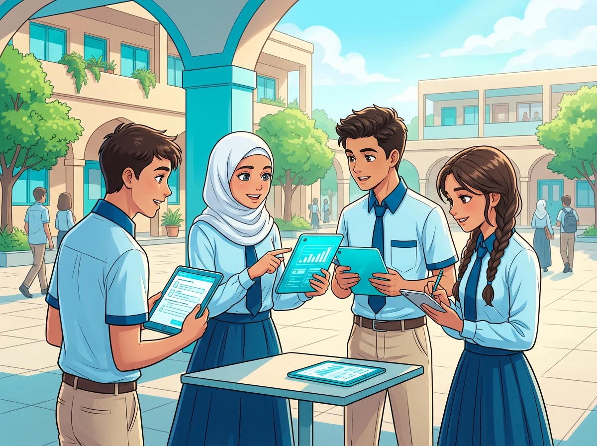

Sec 2 (الصف الثاني الثانوي)📖 Unit 1: Understanding Mental Health • Lessons 1.4 & 1.5
Lessons 1.4 & 1.5: Understanding Mental Health
المفردات الأساسية والهامة كاملة، التعريفات المنهجية، المترادفات والمتضادات، المتلازمات اللفظية، التعبيرات وحروف الجر، الملاحظات اللغوية و Word Families، مع تمارين واختبار تفاعلي شامل 🎯
🌟 المفردات اللغوية الأساسية موضع الامتحان [كما وردت في كتاب الطالب] (Key Vocabulary)
💡 المفردات الأساسية: انقر على أيقونة الصوت 🔊 للاستماع للنطق الدقيق للكلمة، واطلع على معناها وسياق استخدامها.
Adjective (adj)
collectivist
المعنى: جماعي / مؤمن بأهمية الجماعة / ذو نزعة جماعية
💬 السياق والتعريف:
"Giving priority to the interests and needs of the group rather than those of the individual."
Noun (n)
counseling
المعنى: الإرشاد النفسي
💬 السياق والتعريف:
"Professional advice and support given to help someone deal with personal or emotional problems."
Adjective (adj)
decisive
المعنى: حاسم - مؤثر في النتيجة
💬 السياق والتعريف:
"Having a very important influence on the final result of a situation."
Adjective (adj)
individualistic
المعنى: فردي / يميل إلى الفردية / فردي النزعة
💬 السياق والتعريف:
"Giving priority to personal independence, choices, and needs."
Verb (v) [ed]
interact (ed)
المعنى: يتفاعل
💬 السياق والتعريف:
"To act on, communicate with, or affect one another."
Verb (v) [ed]
rank (ed)
المعنى: يرتب - يصنف
💬 السياق والتعريف:
"To place people or things in order according to importance, quality, or success."
Adjective (adj)
rural
المعنى: ريفي
💬 السياق والتعريف:
"Connected with the countryside rather than a town or city."
Adjective (adj)
targeted
المعنى: موجه - مستهدف
💬 السياق والتعريف:
"Directed at a particular person, group, or purpose."
Adjective (adj)
urban
المعنى: حضري - متعلق بالمدينة
💬 السياق والتعريف:
"Connected with a town or city."
Noun (n)
variable
المعنى: متغير
💬 السياق والتعريف:
"A factor, amount, or condition that can change and may affect a result."
❓ تمرين فوري على المفردات الأساسية (Page 93)Exercise on Key Vocab
1. A free offer was sent only to student customers; it was ............. .
2. Although they had never met, they ............. comfortably, sharing stories and jokes.
3. They live in a/an ............. area with busy roads, crowded shops, and tall buildings.
📝 المفردات الهامة (Important Vocabulary)
💡 المفردات الهامة: جميع الكلمات الواردة في الدرس مصنفة بنوعها مع الاستماع الصوتي وترجمتها الدقيقة.
Adjective (adj)
academic
المعنى: أكاديمي - دراسي
Verb (v) [ed]
adopt (ed)
المعنى: يتبنى
Noun (n)
availability
المعنى: توافر
Noun (n)
average
المعنى: متوسط
Adverb (adv)
commonly
المعنى: بصورة شائعة
Verb (v) [d]
conclude (d)
المعنى: يستنتج - يخلص إلى
Verb (v) [led]
control (led)
المعنى: يضبط - يتحكم في
Verb (v) [d]
cope (d)
المعنى: يتكيف - يتعامل
Irregular Verb (v)
draw - drew - drawn
المعنى: يختار من - يستمد من
Verb (v) [d]
examine (d)
المعنى: يفحص - يدرس
Verb (v) [ed]
gather (ed)
المعنى: يجمع
Noun (n)
governorate
المعنى: محافظة
Noun (n)
household
المعنى: أسرة معيشية - منزل
Verb (v) [ied]
identify (ied)
المعنى: يحدد - يتعرف على
Noun (n)
institution
المعنى: مؤسسة
Adjective (adj)
insufficient
المعنى: غير كاف
Verb (v) [d]
manage (d)
المعنى: يدير - يتعامل مع
Adverb (adv)
meaningfully
المعنى: بصورة مؤثرة
Adjective (adj)
nationwide
المعنى: شامل أنحاء البلاد
Noun (n)
participant
المعنى: مشارك
Noun (n)
peer
المعنى: قرين - شخص من الفئة نفسها
Noun (n)
performance
المعنى: أداء
Adjective (adj)
primary
المعنى: رئيسي - أساسي
Noun (n)
quality
المعنى: جودة
Verb (v) [ied]
rely (ied)
المعنى: يعتمد
Verb (v) [ed]
report (ed)
المعنى: يبلغ عن - يذكر
Noun (n)
respondent
المعنى: مجيب - مستجيب للاستبيان
Noun (n)
sample
المعنى: عينة
Irregular Verb (v)
seek - sought
المعنى: يسعى إلى - يطلب
Adjective (adj)
significant
المعنى: ملحوظ - مهم
Adverb (adv)
universally
المعنى: بصورة شاملة - لدى الجميع
Noun (n)
value
المعنى: قيمة
II. DEFINITIONS, SYNONYMS & ANTONYMS
💡 تنويه: هذا الجزء هام جداً سواء على مستوى تعلم اللغة أو التميز في الامتحان.
1. Definitions (التعريفات المنهجية)
Adjective
collectivist
المعنى بالعربية: ذو نزعة جماعية
📖 التعريف بالإنجليزية:
giving priority to the interests and needs of the group rather than those of the individual
Noun
counseling
المعنى بالعربية: الإرشاد النفسي
📖 التعريف بالإنجليزية:
professional advice and support given to help someone deal with personal or emotional problems
Adjective
decisive
المعنى بالعربية: حاسم - مؤثر في النتيجة
📖 التعريف بالإنجليزية:
having a very important influence on the final result of a situation
Adjective
individualistic
المعنى بالعربية: فردي النزعة
📖 التعريف بالإنجليزية:
giving priority to personal independence, choices, and needs
Verb
interact (ed)
المعنى بالعربية: يتفاعل
📖 التعريف بالإنجليزية:
to act on, communicate with, or affect one another
Verb
rank (ed)
المعنى بالعربية: يرتب - يصنف
📖 التعريف بالإنجليزية:
to place people or things in order according to importance, quality, or success
Adjective
rural
المعنى بالعربية: ريفي
📖 التعريف بالإنجليزية:
connected with the countryside rather than a town or city
Adjective
targeted
المعنى بالعربية: موجه - مستهدف
📖 التعريف بالإنجليزية:
directed at a particular person, group, or purpose
Adjective
urban
المعنى بالعربية: حضري - متعلق بالمدينة
📖 التعريف بالإنجليزية:
connected with a town or city
Noun
variable
المعنى بالعربية: متغير
📖 التعريف بالإنجليزية:
a factor, amount, or condition that can change and may affect a result
no exact antonym, leave unranked, leave unclassified
(يترك دون ترتيب - يترك دون تصنيف)
rural (adj)
ريفي
✨ Synonym (المرادف):
country, countryside-based, non-urban
⚡ Antonym (المتضاد):
urban, metropolitan
(حضري - متعلق بمدينة كبيرة)
targeted (adj)
موجه - مستهدف
✨ Synonym (المرادف):
directed, aimed, focused
⚡ Antonym (المتضاد):
untargeted, general
(غير موجه - عام)
urban (adj)
حضري - متعلق بالمدينة
✨ Synonym (المرادف):
city-based, metropolitan
⚡ Antonym (المتضاد):
rural, non-urban
(ريفي - غير حضري)
variable (n)
متغير
✨ Synonym (المرادف):
factor, element, changing quantity
⚡ Antonym (المتضاد):
constant, fixed quantity
(ثابت - كمية ثابتة)
❓ تمارين على التعريفات والمترادفات والمتضادات (Page 97)Exercises On Definitions
1. Although Nabil wanted a new phone, his collectivist family first repaired the water tank everyone needed. What does "collectivist" mean in this context?
2. After weeks of anxiety, she began counseling and gradually learned to discuss her feelings calmly. Which definition describes the meaning of "counseling"?
III. VOCABULARY STUDY: COLLOCATIONS & EXPRESSIONS
💡 المتلازمات والتعبيرات: متلازمات الأفعال مع الأسماء، المصطلحات الهامة، والأفعال مع حروف الجر.
1. Verbal Collocations (المتلازمات اللفظية)
adopt coping strategies
يتبنى استراتيجيات التكيف
control for academic performance variables
يضبط أثر متغيرات الأداء الدراسي
draw from urban and rural schools
يختار من مدارس حضرية وريفية
examine coping strategies
يدرس استراتيجيات التكيف
gather data
يجمع البيانات
identify primary sources of stress
يحدد المصادر الرئيسية للتوتر
manage stress
يتعامل مع التوتر
offer counseling
يقدم الإرشاد النفسي
rank academic pressure first
يصنف الضغط الدراسي أولاً
rely on individual coping strategies
يعتمد على استراتيجيات تكيف فردية
report stress levels
يبلغ عن مستويات التوتر
seek emotional support
يطلب الدعم العاطفي
2. Expressions & Idioms (التعبيرات والمصطلحات)
at least
على الأقل
even after
حتى بعد
in contrast
على النقيض
moderate to high levels
مستويات متوسطة إلى مرتفعة
on average
في المتوسط
primary sources of stress
المصادر الرئيسية للتوتر
a significant gap in access
فجوة ملحوظة في إمكانية الوصول
3. Verb + Preposition (فعل + حرف جر)
be drawn from
يختار من
be followed by
يأتي بعده
drop to
ينخفض إلى
rely on
يعتمد على
seek support from
يطلب الدعم من
4. LANGUAGE NOTES & WORD FAMILIES (ملاحظات لغوية)
💡 الملاحظات اللغوية: دراسة متعمقة للكلمات، المتلازمات المصاحبة (Goes with)، مشتقات الكلمة (Word Family) مع أمثلة وسياقات، والتفريق بين المتشابهات (Don't Mix).
1. collectivist (adj)
ذو نزعة جماعية
✅ Goes with (تأتي مع):
collectivist values: قيم ذات نزعة جماعية
collectivist culture: ثقافة ذات نزعة جماعية
👥 Word Family (عائلة الكلمة):
Word
Meaning
Example
collective (adj)
جماعي / مشترك
The community took collective responsibility for the problem.
collectivism (n)
النزعة الجماعية
Collectivism encourages people to support their group.
collectivist (adj)
ذو نزعة جماعية
Collectivist cultures often value family support.
❌ Don't mix (انتبه للفرق):
• collectivist = giving priority to the group and its shared interests.
• collective = done, owned, or shared by all the members of a group.
2. counseling (n)
الإرشاد النفسي
✅ Goes with (تأتي مع):
school counseling: الإرشاد النفسي المدرسي
counseling services: خدمات الإرشاد النفسي
👥 Word Family (عائلة الكلمة):
Word
Meaning
Example
counsel (v)
ينصح / يقدم المشورة
Trained teachers counsel students who are experiencing stress.
counseling (n)
الإرشاد النفسي
Counseling can help adolescents manage stress.
counselor (n)
مرشد نفسي
The school counselor listened carefully to the student.
❌ Don't mix (انتبه للفرق):
• counseling = professional support that may continue over a period of time.
• advice = an opinion or suggestion about what someone should do.
3. decisive (adj)
حاسم
✅ Goes with (تأتي مع):
a decisive factor: عامل حاسم
play a decisive role: يؤدي دوراً حاسماً
👥 Word Family (عائلة الكلمة):
Word
Meaning
Example
decide (v)
يقرر
The committee will decide which programme to support.
decision (n)
قرار
Exercising regularly was a wise decision.
decisive (adj)
حاسم
Family support was a decisive factor in her recovery.
❌ Don't mix (انتبه للفرق):
• decisive = capable of determining the final result.
• important = having great value, but not necessarily determining the result.
4. individualistic (adj)
فردي النزعة
✅ Goes with (تأتي مع):
individualistic approach: نهج فردي النزعة
👥 Word Family (عائلة الكلمة):
Word
Meaning
Example
individual (n/adj)
فرد / فردي
Each individual has a free opinion.
individualism (n)
النزعة الفردية
Individualism values personal decisions.
individualistic (adj)
فردي النزعة
Some people are individualistic.
❌ Don't mix (انتبه للفرق):
• individualistic = valuing personal independence and individual choice.
• selfish = caring only about yourself and not about other people.
5. interact (ed) (v)
يتفاعل
✅ Goes with (تأتي مع):
interact with others: يتفاعل مع الآخرين
factors interact: تتفاعل العوامل
👥 Word Family (عائلة الكلمة):
Word
Meaning
Example
interact (v)
يتفاعل
Students interact with one another politely.
interaction (n)
تفاعل
Social interaction can improve emotional well-being.
interactive (adj)
تفاعلي
The teacher used an interactive learning activity.
❌ Don't mix (انتبه للفرق):
• interact = communicate with or affect one another.
• react = respond to an action, event, or situation.
6. rank (ed) (v)
يرتب / يصنف
✅ Goes with (تأتي مع):
rank something first: يصنف شيئاً في المرتبة الأولى
rank according to importance: يرتب حسب الأهمية
👥 Word Family (عائلة الكلمة):
Word
Meaning
Example
rank (v/n)
يرتب أو يصنف - مرتبة
Students ranked academic pressure as the main cause of stress.
ranking (n)
ترتيب - تصنيف
The school improved its national ranking.
ranked (adj)
مرتب - مصنف
The report contained a ranked list of the main causes.
❌ Don't mix (انتبه للفرق):
• rank = place several people or things in a particular order.
• rate = judge the quality or value of something, often by giving it a score.
7. rural (adj)
ريفي
✅ Goes with (تأتي مع):
rural areas: المناطق الريفية
rural schools: المدارس الريفية
👥 Word Family (عائلة الكلمة):
Word
Meaning
Example
rural (adj)
ريفي
Some rural schools lack counselling services.
rurally (adv)
في منطقة ريفية
Rurally located communities may be difficult to reach.
rurality (n)
الطابع الريفي
The area's rurality can make transport difficult.
❌ Don't mix (انتبه للفرق):
• rural = connected with the countryside.
• remote = far away from towns, cities, or other people (A rural place is not necessarily remote).
8. targeted (adj)
موجه / مستهدف
✅ Goes with (تأتي مع):
targeted support: دعم موجه
a targeted campaign: حملة موجهة
👥 Word Family (عائلة الكلمة):
Word
Meaning
Example
target (n)
هدف / فئة مستهدفة
Teenagers were the main target of the campaign.
target (v)
يستهدف
The programme targets students experiencing stress.
targeted (adj)
موجه / مستهدف
Rural schools need targeted mental-health support.
❌ Don't mix (انتبه للفرق):
• targeted = directed at a particular group, problem, or purpose.
• general = intended for everyone and not directed at one particular group.
9. urban (adj)
حضري
✅ Goes with (تأتي مع):
urban areas: المناطق الحضرية
urban development: التنمية الحضرية
👥 Word Family (عائلة الكلمة):
Word
Meaning
Example
urban (adj)
حضري
Urban schools had better access to counseling services.
urbanize (v)
يحول إلى منطقة حضرية
The government plans to urbanize the developing area.
urbanization (n)
التحضر / التوسع العمراني
Rapid urbanization can place pressure on public services.
❌ Don't mix (انتبه للفرق):
• urban = connected with a town or city.
• suburban = connected with a residential area on the edge of a town or city.
10. variable (n)
متغير
✅ Goes with (تأتي مع):
a key variable: متغير رئيسي
a dependent variable: متغير تابع
👥 Word Family (عائلة الكلمة):
Word
Meaning
Example
vary (v)
يتغير / يختلف
Stress levels vary from one student to another.
variable (n/adj)
متغير / قابل للتغير
Sleep was an important variable in the study.
variation (n)
اختلاف / تفاوت
The survey revealed considerable variation in stress levels.
❌ Don't mix (انتبه للفرق):
• variable = a factor or quantity that can change.
• variety = a collection or range of different types of things.
⚡ الدليل الشامل لقواعد "حالات الشرط" (The "IF" Conditionals Masterclass)
💡 سحر الـ IF: استمتع بشرح تفاعلي متكامل لقواعد وحالات الشرط مع مستر أحمد عاصم. يمكنك مشاهدة فيديو الشرح التفصيلي، والتنقل بين الشرائح التفاعلية الـ 11، والاستماع لنطق كل الأمثلة مع التقييم الفوري 🎯.
🎥 فيديو الشرح الكامل: سحر الـ "IF" (The "IF" Conditionals)
✨ شرح حالات الشرط، البدائل الاحترافية، وصيغ الحذف مع مستر أحمد عاصم
💡 تعليمات القراءة: استمتع بقراءة نص الوحدة من خلال الكتاب التفاعلي. يمكنك تشغيل القارئ الصوتي التلقائي (Auto Storyteller) للاستماع إلى النص ومتابعة الترجمة والمفردات اللغوية لكل مشهد، أو الضغط على زر الاستماع في أي صفحة.
🖼️ Scene 1 of 4

A comprehensive health survey across five Egyptian governorates
📖 Mental Health & Teen LifePage 1 / 4
1. Nationwide School Health Survey
A nationwide school health survey done in Egypt in 2023 gathered data from 450 teenagers aged between 14 and 17, drawn from both urban and rural schools across five governorates. The study aimed to identify the primary sources of stress among teenagers and to examine the coping strategies they most commonly adopted. Its findings show a complex picture of modern teenage life, in which academic pressure, digital habits, and social expectations interact in ways that are often difficult to separate.
💡 الترجمة:
أجرى مسح صحي مدرسي شامل على مستوى الجمهورية في مصر عام 2023 لجمع بيانات من 450 مراهقاً تتراوح أعمارهم بين 14 و 17 عاماً من مدارس حضرية وريفية عبر خمس محافظات. هدفت الدراسة إلى تحديد المصادر الرئيسية للتوتر والضغط النفسي بين المراهقين ودراسة استراتيجيات التكيف الأكثر شيوعاً التي تبنوها. تظهر النتائج صورة معقدة لحياة المراهقين المعاصرة حيث يتفاعل الضغط الدراسي والعادات الرقمية والتوقعات الاجتماعية بطرق يصعب فصلها.